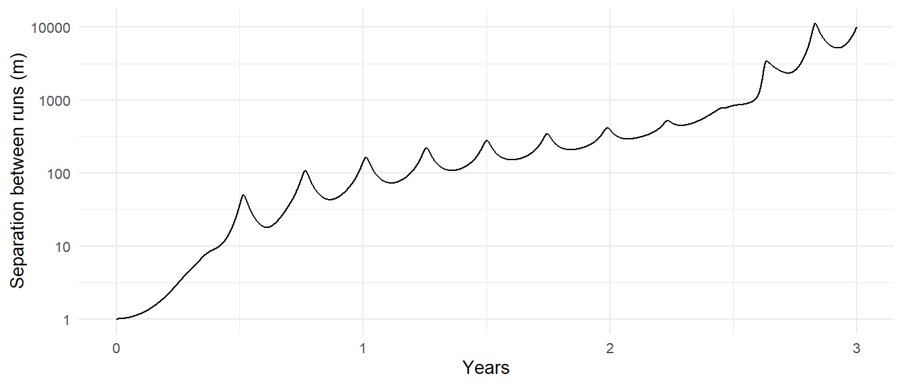
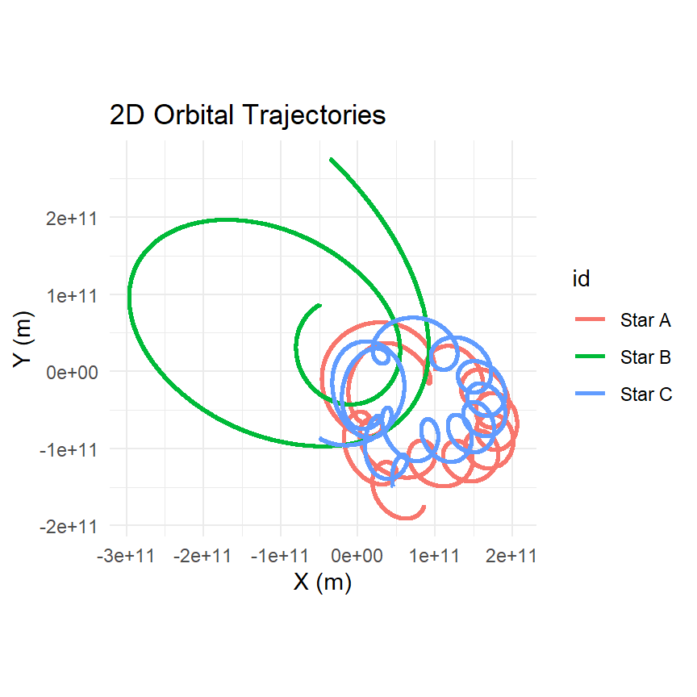
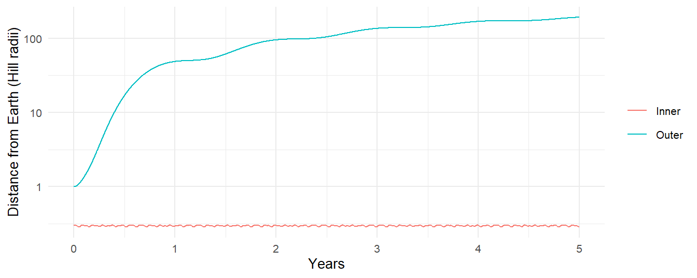
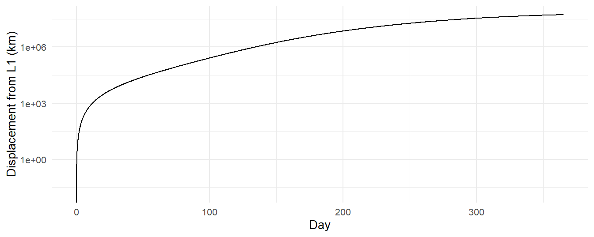

triple <- function(dx = 0) {
create_system() |>
add_body("Star A", mass = 1e30, x = 1e11 + dx, y = 0,
vx = 0, vy = 15000) |>
add_body("Star B", mass = 1e30, x = -5e10, y = 8.66e10,
vx = -12990, vy = -7500) |>
add_body("Star C", mass = 1e30, x = -5e10, y = -8.66e10,
vx = 14000, vy = -8000) |>
simulate_system(time_step = seconds_per_hour, duration = seconds_per_year * 3)
}
run_1 <- triple()
run_2 <- triple(dx = 1) # Star A starts one meter to the right11 Chaos and the Three-Body Problem
Chapter 4 solved the two-body problem completely, on paper. Add one more body and the paper runs out: there is no formula, and for most starting configurations there is not even a stable outcome, only a brief dance and then an ejection. The package documentation shows one such triple and says that it is chaotic. This chapter measures the chaos: how fast two nearly identical triples diverge, what a slingshot ejection does to the energy budget, and why some three-body systems (ours, for instance) are perfectly well behaved. It ends with the five points where a third body can sit still, and why three of them are traps.
11.1 What Poincaré proved
11.2 Sensitive dependence, measured
Here is the documentation’s triple: three Sun-mass stars at the corners of a triangle, with velocities that are nearly but not quite symmetric.
One meter, in a system a hundred billion meters across: a part in \(10^{11}\), far below any conceivable measurement of a real star’s position. Track how far apart the two runs drift:
divergence <- inner_join(
run_1 |> select(time, id, x, y, z),
run_2 |> select(time, id, x2 = x, y2 = y, z2 = z),
by = c("time", "id")) |>
mutate(d = sqrt((x - x2)^2 + (y - y2)^2 + (z - z2)^2)) |>
group_by(time) |>
summarise(separation = sqrt(sum(d^2)))divergence |>
ggplot(aes(time / seconds_per_year, separation)) +
geom_line() +
scale_y_log10() +
labs(x = "Years", y = "Separation between runs (m)")
The separation grows exponentially: a straight line on a log axis. That is the signature of chaos, and the slope of the line is its rate. If the separation grows as \(\delta(t) = \delta_0 e^{t/\tau}\), then \(\tau\) is the Lyapunov time, the time for a small error to grow by a factor of \(e\). Fit it on the part of the curve that is still growing, before the separation saturates at the size of the system:
growth <- divergence |>
filter(separation > 1e3, separation < 1e9)
tau <- 1 / coef(lm(log(separation) ~ time, data = growth))[["time"]]
tau / seconds_per_day
#> [1] 92.63501A Lyapunov time of a few weeks. Every few weeks the uncertainty in the system’s state grows by a factor of nearly three; in a year it has grown by a factor of \(e^{365/\tau}\), which is enormous. After the point where the two curves saturate, the runs have nothing to do with each other: they are two different triples that happen to share a history.
This has a practical consequence that is easy to miss. Beyond the Lyapunov horizon, the simulation is not predicting this system. The integrator’s own rounding errors, at the \(10^{-16}\) level, are amplified just like the one-meter nudge, so two runs on different computers, or the same run with a different time step, will disagree in detail after a year or two. What the simulation does predict is the kind of thing that happens: the statistics of the dance, the fact of the ejection, roughly when. For chaotic systems, those are the only questions with answers.
11.3 Slingshot
plot_orbits(run_1)
The documentation says one star gets flung out. Let’s make “flung out” precise. A body has escaped a system when its energy relative to the rest, kinetic energy in the center-of-mass frame plus its potential energy with every other body, is positive: it has enough speed to climb out of the potential well of the others and keep going. Here is that bookkeeping at a single instant:
body_energies <- function(snapshot, G = gravitational_constant) {
M <- sum(snapshot$mass)
v_cm <- c(sum(snapshot$mass * snapshot$vx),
sum(snapshot$mass * snapshot$vy),
sum(snapshot$mass * snapshot$vz)) / M
n <- nrow(snapshot)
E <- numeric(n)
for (i in seq_len(n)) {
v_rel <- c(snapshot$vx[i], snapshot$vy[i], snapshot$vz[i]) - v_cm
KE <- 0.5 * snapshot$mass[i] * sum(v_rel^2)
PE <- 0
for (j in seq_len(n)[-i]) {
r_ij <- sqrt((snapshot$x[i] - snapshot$x[j])^2 +
(snapshot$y[i] - snapshot$y[j])^2 +
(snapshot$z[i] - snapshot$z[j])^2)
PE <- PE - G * snapshot$mass[i] * snapshot$mass[j] / r_ij
}
E[i] <- KE + PE
}
tibble(id = snapshot$id, energy = E,
r_from_cm = sqrt((snapshot$x - sum(snapshot$mass * snapshot$x) / M)^2 +
(snapshot$y - sum(snapshot$mass * snapshot$y) / M)^2))
}
bind_rows(
run_1 |> filter(time == min(time)) |> body_energies() |> mutate(when = "start"),
run_1 |> filter(time == max(time)) |> body_energies() |> mutate(when = "end")
) |>
arrange(id, when)
#> # A tibble: 6 × 4
#> id energy r_from_cm when
#> <chr> <dbl> <dbl> <chr>
#> 1 Star A -1.31e39 166443322355. end
#> 2 Star A -6.56e38 100000000000 start
#> 3 Star B -1.93e38 299192659248. end
#> 4 Star B -6.55e38 99997799976. start
#> 5 Star C -1.03e39 134679821974. end
#> 6 Star C -6.47e38 99997799976. startAt the start all three stars are bound to the system. At the end, a star whose energy is positive is leaving and never coming back, and it is the one farthest from the center of mass. Where did its energy come from? Total energy is conserved (check it with conserved_quantities()), so if one star gained enough to escape, the other two lost the same amount: the pair left behind is on a tighter, more negative-energy orbit than any pair was at the start. This is the slingshot, and it is the basic mechanism of stellar dynamics. In a star cluster, three-body encounters harden binaries and eject single stars, and over millions of years that is how clusters lose members and how their cores contract. We can look at the binary that remains:
final <- run_1 |> filter(time == max(time)) |> body_energies()
bound <- final |> filter(energy < 0) |> pull(id)
bound
#> [1] "Star A" "Star B" "Star C"if (length(bound) == 2) {
last_year <- run_1 |> filter(time > max(time) - seconds_per_year)
get_orbital_elements(last_year, bound[2], bound[1],
mu = gravitational_constant * 2e30) |>
filter(time == max(time)) |>
mutate(a_AU = a / distance_earth_sun) |>
select(a_AU, e)
}The survivors’ orbit is a two-body ellipse, and from here on, unless the third star comes back, Chapter 4 describes them exactly. A typical outcome of a three-body breakup is a binary with a substantial eccentricity: the third body did not leave politely.
11.4 Why the Sun, Earth, and Moon are not chaotic
If three bodies are chaotic, how does the Moon manage? The Sun-Earth-Moon system is a three-body system, and the Moon has been in orbit for four billion years. The answer is hierarchy: the Moon is close to Earth and both are far from the Sun, so the Moon’s orbit is a two-body orbit about Earth with a small perturbation, and Earth’s is a two-body orbit about the Sun with a small perturbation. Chaos needs the three bodies to interact as equals.
How close is close enough? Think about it in the frame rotating with Earth around the Sun. A satellite of Earth is held by Earth’s gravity, \(G m_\oplus / r^2\), and pulled away by the difference between the Sun’s gravity at its position and at Earth’s, plus the centrifugal effect of the rotation. Along the Sun-Earth line, that tidal acceleration works out to \(3\,G M_\odot\, r / R^3\), where \(R\) is Earth’s distance from the Sun (two parts from the Sun’s gradient, one from the centrifugal term). The two balance at
\[ r_{\mathrm{H}} = R\left(\frac{m_\oplus}{3 M_\odot}\right)^{1/3}, \tag{11.1}\]
the Hill radius. Inside it, Earth wins; outside it, the Sun does. For Earth it is
r_H <- distance_earth_sun * (mass_earth / (3 * mass_sun))^(1 / 3)
c(r_H_km = r_H / 1e3, in_lunar_distances = r_H / distance_earth_moon)
#> r_H_km in_lunar_distances
#> 1.496418e+06 3.892866e+00about four times the Moon’s distance. The Moon sits at a quarter of the Hill radius, which is comfortably inside. Simulations of the restricted three-body problem show that orbits going the same way as the planet (prograde) are stable out to roughly half the Hill radius, and retrograde ones somewhat farther. Test it with two hypothetical moons, one at \(0.3\,r_{\mathrm{H}}\) and one at \(1.0\,r_{\mathrm{H}}\):
hill_test <- create_system() |>
add_sun() |>
add_body("Earth", mass = mass_earth, x = distance_earth_sun, vy = speed_earth) |>
add_body("Inner", mass = 1e20, x = distance_earth_sun + 0.3 * r_H,
vy = speed_earth + sqrt(gravitational_constant * mass_earth / (0.3 * r_H))) |>
add_body("Outer", mass = 1e20, x = distance_earth_sun + 1.0 * r_H,
vy = speed_earth + sqrt(gravitational_constant * mass_earth / r_H)) |>
simulate_system(time_step = seconds_per_hour, duration = seconds_per_year * 5)hill_test |>
shift_reference_frame("Earth", keep_center = FALSE) |>
filter(id != "Sun") |>
mutate(r = sqrt(x^2 + y^2 + z^2) / r_H) |>
ggplot(aes(time / seconds_per_year, r, color = id)) +
geom_line() +
scale_y_log10() +
labs(x = "Years", y = "Distance from Earth (Hill radii)", color = NULL)
The inner moon’s distance stays in a narrow band; the outer one wanders off within months and is thereafter a planet in its own right, orbiting the Sun near Earth. The Hill radius is the boundary of a planet’s domain, and it explains a great deal: why the giant planets, with enormous Hill spheres, have dozens of moons each; why Mercury, deep in the Sun’s gravity, has none; and why the Moon’s orbit, though perturbed by the Sun in a hundred measurable ways, is in no danger.
11.5 The Lagrange points, and which ones are traps
Chapter 10 found the \(L_4\) point, where a small body can orbit with Jupiter indefinitely. There are five such points in the rotating frame of any circular binary. \(L_1\) lies between the two bodies, \(L_2\) beyond the smaller one, \(L_3\) beyond the larger one, and \(L_4\) and \(L_5\) at the two equilateral positions. Only the last two are stable, and only when the mass ratio is small. \(L_1\), \(L_2\), and \(L_3\) are saddle points: a body placed exactly there stays, but any displacement along one direction grows exponentially.
\(L_1\) and \(L_2\) are at approximately one Hill radius from the smaller body, toward and away from the larger one; Equation 11.1 is in fact the leading-order position of those two points. Put a test body at the Sun-Earth \(L_1\), moving so that it would co-rotate with Earth, and watch:
d <- distance_earth_sun
omega <- sqrt(gravitational_constant * (mass_sun + mass_earth) / d^3)
M <- mass_sun + mass_earth
earth_x <- d * mass_sun / M # Earth's distance from the barycenter
L1 <- c(earth_x - r_H, 0)
v_L1 <- omega * c(-L1[2], L1[1])
l1_test <- create_system() |>
add_body("Sun", mass = mass_sun, x = -d * mass_earth / M,
vy = -omega * d * mass_earth / M) |>
add_body("Earth", mass = mass_earth, x = earth_x, vy = omega * earth_x) |>
add_body("Probe", mass = 1e3, x = L1[1], vx = v_L1[1], vy = v_L1[2]) |>
simulate_system(time_step = seconds_per_hour, duration = seconds_per_year)l1_test |>
filter(id == "Probe") |>
mutate(theta = omega * time,
xr = x * cos(theta) + y * sin(theta),
yr = -x * sin(theta) + y * cos(theta),
displacement = sqrt((xr - L1[1])^2 + (yr - L1[2])^2)) |>
ggplot(aes(time / seconds_per_day, displacement / 1e3)) +
geom_line() +
scale_y_log10() +
labs(x = "Day", y = "Displacement from L1 (km)")
l1_growth <- l1_test |>
filter(id == "Probe") |>
mutate(theta = omega * time,
xr = x * cos(theta) + y * sin(theta),
yr = -x * sin(theta) + y * cos(theta),
displacement = sqrt((xr - L1[1])^2 + (yr - L1[2])^2)) |>
filter(time > seconds_per_day * 20, time < seconds_per_day * 120)
1 / coef(lm(log(displacement) ~ time, data = l1_growth))[["time"]] / seconds_per_day
#> [1] 19.98168The e-folding time is a few weeks. (The probe does not start exactly at \(L_1\), because Equation 11.1 is only the first term of the exact position, so it begins drifting at once; a body placed with perfect precision would still be dislodged by the Moon, the other planets, and sunlight.) This is why the spacecraft parked at \(L_1\) and \(L_2\), SOHO, Gaia, JWST, do not sit at the point but fly halo orbits around it, and fire their thrusters every few weeks to stay on them. The instability is slow enough to manage and fast enough that it can never be ignored.
Exercises
Exercise 11.1 Repeat the twin-run experiment with a time step of 30 minutes instead of an hour. Does the Lyapunov time change? Does the detailed trajectory after two years change? What does that tell you about which results of a chaotic simulation to trust?
Exercise 11.2 Run get_energy() on the three-year triple and confirm the total is conserved through the ejection. Then compute the energy of the surviving pair alone (as a two-body system) at the end and show that it is more negative than the total.
Exercise 11.3 The figure-eight orbit is a periodic solution of the equal-mass three-body problem in which all three bodies chase each other around a single figure-eight curve. In units with \(G = 1\) and unit masses, its initial conditions are bodies at \((0.97000436, -0.24308753)\), \((-0.97000436, 0.24308753)\), and \((0, 0)\) with velocities \((0.46620369, 0.43236573)\), \((0.46620369, 0.43236573)\), and \((-0.93240737, -0.86473146)\). Scale these to SI units (choose a mass and a length; derive the time and velocity scales) and reproduce the orbit with create_system(G = ...). How long does it stay on the figure eight?
Exercise 11.4 Place a test moon at \(0.7\,r_{\mathrm{H}}\) on a retrograde orbit (reverse the sign of its velocity relative to Earth) and another at the same distance prograde. Which survives five years?
Exercise 11.5 Repeat the \(L_1\) experiment at \(L_2\), on the far side of Earth from the Sun, where JWST operates. Is the e-folding time the same? Then try \(L_3\), and explain why its instability is so much slower.